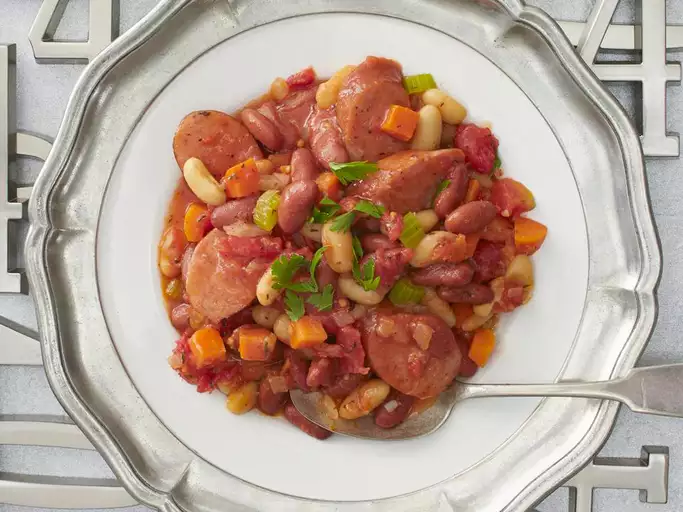

Cassoulet

Description
This quick cassoulet recipe is a great combination of beans, smoked sausage, and vegetables in an easy one-skillet meal. We've been making this so long I can't even remember where I first got the recipe — even my teenage daughter and her friends love it. It's also a staple when we go camping. Serve with a green salad and French bread.
Ingredients:
- 1 tablespoon vegetable oil
- 2 carrots, diced
- 2 stalks celery, diced
- 1 small yellow onion, diced
- 2 cloves garlic, chopped
- ½ pound smoked sausage, sliced
- 1 (15 ounce) can kidney beans, rinsed and drained
- 1 (15 ounce) can cannellini beans, rinsed and drained
- 1 (14.5 ounce) can diced tomatoes, drained
- 2 bay leaves
- 1 teaspoon dried thyme
- ½ teaspoon salt
- ¼ teaspoon ground black pepper
- 1 tablespoon chopped fresh parsley (Optional)
Steps:
- Heat oil in a large skillet over medium-high heat. Add the carrots, celery, onion, and garlic; cook and stir for a few minutes, until onion is transparent. Add sausage to the skillet, and cook for a few more minutes to brown.
- Pour in kidney beans, cannellini beans, and tomatoes; season with bay leaves, thyme, salt, and pepper. Cover, and reduce the heat to low. Simmer for 10 minutes, occasionally stirring until vegetables are tender.
- Remove bay leaves and discard. Sprinkle parsley over the top, and serve.